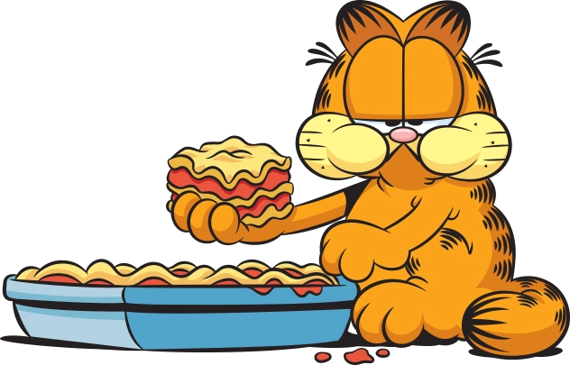
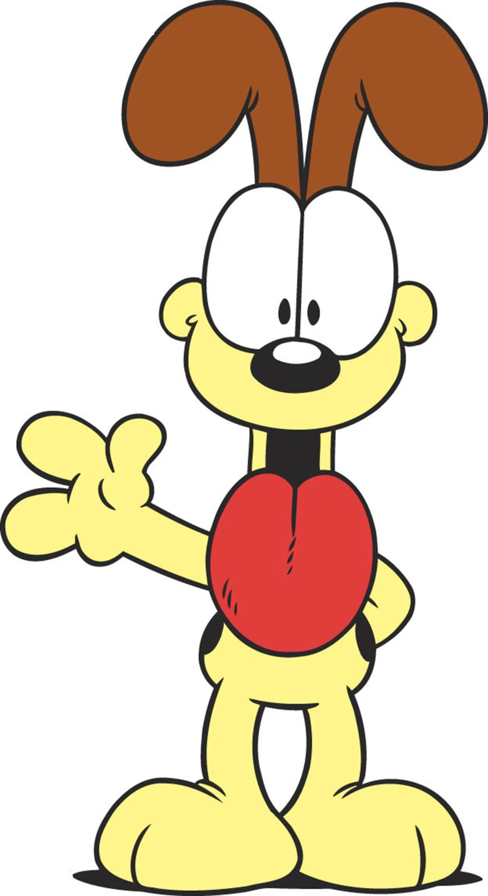
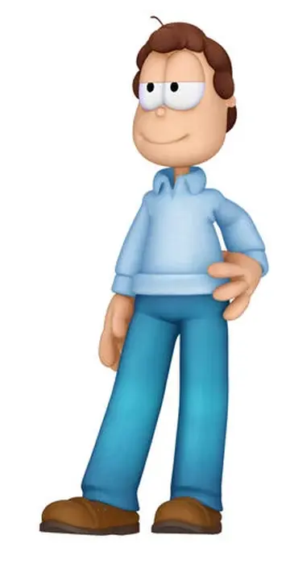
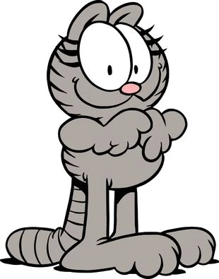
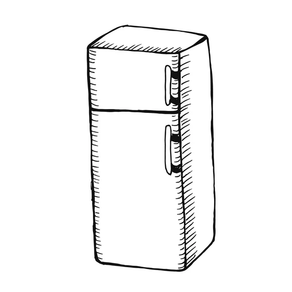

Soy Garfield, un personaje animado de una famosa serie de cómics y dibujos que lleva mi nombre, creada por el caricaturista Jim Davis en 1978. A lo largo de los años he protagonizado tiras, series y películas que me han hecho mundialmente famoso (aunque yo preferiría ser famoso sin levantarme del sofá). Soy un gato naranja, perezoso, con tendencia a la obesidad, amante de la comida y enemigo número uno de los lunes. Me encanta comer, sobre todo lasaña, y pasar la mayor parte del día durmiendo. En mis aventuras convivo con mi humano Jon Arbuckle, el perro Odie y otros personajes, a los que suelo observar con sarcasmo mientras descanso tranquilamente.
Soy un gato naranja profesional en dormir, comer lasañas y evitar cualquier tipo de esfuerzo innecesario. Me considero un experto en la vida cómoda, con más de 10 años de experiencia descansando en sofás, camas y cualquier superficie acolchada. Durante mi carrera he prefeccionado el arte de parecer ocupado sin hacer absolutamente nada. Si es lunes ni se te ocurra llamar.
| NOMBRE | FOTO | FRASE DESTACADA |
|---|---|---|
| Oddie |  |
Guau... quiero decir, es mi héroe. |
| Jon Arbuckle |  |
Nunca he conocido a nadie tan vago y tan feliz al mismo tiempo. |
| Nermal |  |
Siempre presume de ser el gato más mono, pero sabe que yo soy el mejor. |
| La nevera |  |
Siempre vuelve a mí, soy como un imán para este gato naranja. |